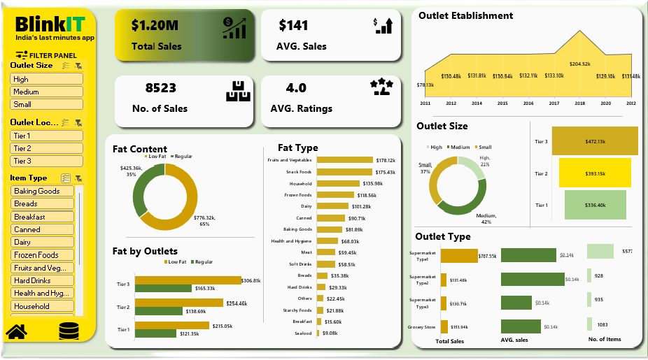

Project Overview
I took on BlinkIt’s sales dataset to uncover actionable insights for a quick-commerce platform. With $1.2M in total sales across 8,523 transactions, an average of $141 per sale, and a 4.0 customer rating, I aimed to identify growth opportunities through data cleaning, analysis, and visualization in Excel, culminating in a dynamic dashboard.
Project Objectives
- To analyze BlinkIt’s sales data, validate and transform it into actionable insights using Excel, and develop a dynamic dashboard to identify growth opportunities.
- To uncover trends in outlet performance, product preferences, and revenue distribution, enabling a strategic plan to scale Tier 3 outlets, prioritize low-fat/health-focused products, and optimize the supermarket channel.
- Ultimately driving the platform’s growth to exceed $1.2M in total sales.
Tools Used
- Microsoft Excel
Data Source
The dataset was sourced from Data Tutorial: Blinkit Sales Dataset. It includes details such as items type, fat contnet, year of establishment, Sales, and other sales details.
Steps Taken: From Raw Data to Dashboard
- Data Validation in Excel: I started by cleaning the dataset—removing blank rows and duplicates using Excel’s “Remove Duplicates” feature. I validated the “Item Type” column with Data Validation to ensure consistency, and used IF functions (e.g.,
IF(ISBLANK(A2),"Missing",A2)) to flag incomplete entries. - Analysis with Pivot Tables: I created Pivot Tables to summarize sales by outlet tier, fat content, and item type. For example, I grouped sales data by “Outlet Size” to calculate totals like $427.1K for Tier 3, and used filters to break down fat content (49% low-fat, 51% regular).
- Visualization: I built dynamic charts—pie charts for fat content (showing 49% low-fat), bar charts for outlet types (supermarkets at $207.5K), and line graphs for outlet establishment trends (peaking at $204.5K in 2022).
- Dashboard Creation: I combined these visuals into a dynamic Excel dashboard using slicers for interactive filtering by outlet size and item type, enabling real-time insights into sales trends and customer preferences.
Key Insights from the Dashboard
Through comprehensive analysis, the following insights were uncovered:
- Outlet Size Impact: Tier 1 (small) outlets contribute $336.4K, Tier 2 (medium) deliver $393.1K, and Tier 3 (large) lead at $427.1K—bigger outlets drive more revenue.
- Growth Trend: Outlet establishment sales grew steadily from 2011 to 2022, peaking at $204.5K in 2022, showing a maturing network ready to scale.
- Top-Performing Channels: Supermarkets shine with $207.5K, hypermarkets add $92.1K, and specialty stores bring $57.7K—a diverse revenue mix to optimize.
- Product Trends: Low-fat items (49%) outvalue regular (51%) at $318.6K vs. $877.2K. Fruits and veggies ($175.2K) and snacks ($154.8K) lead, with baking goods, breakfast, and dairy as top categories—health-focused products are trending!
My Strategic Play
This dashboard lights the way! I’d scale Tier 3 outlets to boost revenue, lean hard into the low-fat and health trend with more offerings, and maximize supermarkets as the top channel. With steady growth since 2011 and a 4.0 rating, I’d keep expanding outlets while keeping customers thrilled. That’s how I’d skyrocket BlinkIt—and I’m ready to bring that strategic firepower to your team!
The Excel Dashboard below visualizes these insights, empowering BlinkIt’s sales teams to optimize outlet performance and product strategies based on revenue, outlet size, and customer preferences.
 Skills Applied: Data Cleaning, Excel (Pivot Tables, Charts, Dashboards), Data Visualization, Strategic Analysis.